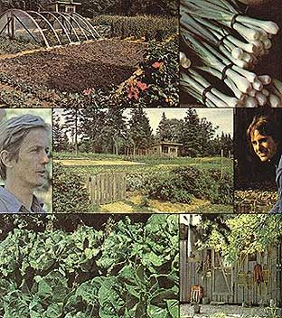
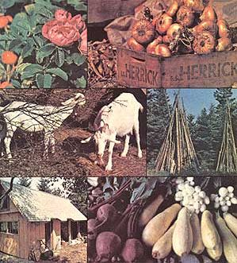

Eliot Coleman, his wife Sue, and their two daughters live next door to Helen and Scott Nearing "way up in the state of Maine". Up where the short growing season and the poor soil make it impossible to raise a good garden . . . let alone pay for a homestead almost entirely with the produce you grow. Right? Wrong! Because Eliot and Sue are not only raising a showplace garden and buying their homestead with the produce they sell . . . but they're doing it all without the chemicals and the gasoline-gulping equipment which all of the agribiz magazines and newspapers swear up and down that a farmer "needs" today.
The photos above testify to the Coleman's success. And the bibliography of biological agriculture that Eliot has assembled (and which is printed on the following five pages) should give you a long leg up on the preparations you must make to (we hope) eventually enjoy the same kind of success for yourself. This just may be one of the most important articles we've ever run!
The best place, always, to begin . . . is at the beginning. And intelligent folks usually plunge into a field that's new to them by surveying the work of those who have gone ahead.
And now-for the first time ever, to our knowledge-Eliot Coleman (see his family's homestead, in color, on pages 72-73 of this issue) has made it easy for you to survey most of the milestone work so far accomplished in the field of biological agriculture. Without fighting your way through a deck stacked in favor of any particular sub-school of thought. Without listening to your guide rave and rant against "the establishment". Without all the rather irrational emotion usually exhibited by biological agriculture's "true believers".
Oh, Eliot's a true believer all right. In results . And it happens that he's been realizing some interesting-even spectacular-results with his experiments in biological agriculture. If we're lucky, he might even share some of that work and those results with us in forthcoming issues of THE Mother Earth News (restricted) . For now, however, we're pleased to reprint the following list of books and papers that Eliot has found to be a useful introduction to the field of wholistic gardening and farming.
by
Eliot Coleman
A Publication of TheSmall Farm Research Association
Harborside, Maine 04642
This is a pamphlet for the doubters . . . which, I hope, includes everyone. There are too many unanswered questions for anyone to be a true believer in biological agriculture.
For the official doubters, such as the agricultural spokesmen who state that it is impossible to farm successfully without chemicals and poisons, this bibliography contains books by farmers who claim to have done the impossible. For the unofficial doubters, like those who just think that it is all too complicated, this bibliography contains books by gardeners who make it all sound easy. And for everyone else it contains books which should establish that biological agriculture is more than just "we don't use this" or "we don't use that" statements by which it is so often misrepresented.
It would not be fair to dismiss these books offhand for their faults. Many were written over thirty years ago and some are not too rigorously scientific. Books that are otherwise reasonable but weak in factual presentation have not been excluded. Nonetheless, the conscientious reader should use all of these guides to gain a better understanding of biological agriculture and the many ways of practicing it.
It would be equally unfair to condemn the titles in this bibliography as the work of unqualified amateurs. The attainment of a Ph.D. is no guarantee of brains and logically the lack of same does not establish incompetence. On occasion certain observations of these amateurs are incorrect. That is not surprising. But is should not invalidate their many sustainable observations nor should the value of practical observation itself be disregarded because the requirements of modern statistical analysis are not fulfilled. The truly unscientific man is the one who denounces knowledge gained by observation and experience simply because it does not agree with the established dogma. The province of science is investigation, not reprobation.
Much of the controversy between the chemical and the biological methods of agriculture has centered around attempts to prove one system superior to the other. Such comparisons are non-productive. It is a little like discussing whether dairy farming is better or worse than raising blueberries. Both are equally viable systems and both produce food by treating the soil in a particular way. The chemical and biological systems of farming are also equally viable but the difference is that the former has been thoroughly researched and the latter has not. It would be a great step forward if research could be conducted in recognition of the potential of biological agriculture and with the intention of improving techniques, refining approaches, and developing scientific parameters for further study.
This is a good place to clear up a major misunderstanding about biological agriculture. The scientists contend that the elements are identical whether applied in the form of chemical fertilizer or in the form of compost. "Nitrogen is nitrogen", as they say. All well and good, biological agriculture does not dispute the table of elements. But that is beside the point. The principal object of biological agriculture is not to supply "available plant foods" whether through compost or any other way but rather to create the optimal conditions of a balanced soil under which natural processes can maintain a healthy soil-plant economy.
This bibliography is not exhaustive. Many readers will wish to add to it.. Every effort, however, has been made to compile a reasonably complete list of those books which merit attention. Most of these are out of print, especially the older ones published in England. Notation is made in this bibliography of those titles that have been recently reprinted and which should be available. The rest may be found in libraries.
There has been no attempt at mono-think. As might be expected the authors do not always agree with each other. Some are only involved on the periphery of biological agriculture. Those authors are starred who present the most reputable evidence for their case.
And finally, a suggestion for those who intend to pursue the subject of biological agriculture through these books. It is most important to read critically, check references, compare, and see what the other side has to say in order not to become, tike so many proselytizers of a new idea, "a man of vast and varied misinformation".
ALBRECHT, WILLIAM A.
Soil Fertility and Animal Health Fred Hahne 1958
An outstanding survey of the subject by the most respected American exponent of intelligent farming. Albrecht begins with an old quote, "All flesh is grass", and proceeds to demonstrate the importance of the quality of that grass to animal health. Recommended.
AUBERT, CLAUDE
L' Agriculture Biologique LeCourrier du Livre 1970
An able presentation of the case by a leading European expert. In French. Recommended.
BAKER, C. ALMA
The Labouring Earth Heath Cranton 1940
A survey of agriculture from the bio-dynamic point of view.
We are not out to convince anyone of the truth of the discoveries we have made of the way the soil transforms itself in three years using our methods, for we are confident ourselves that time will do that for us. We put forward this method as an alternative to the orthodox gardening techniques, which today involve growers in heavy labor costs and outlay on stable and artificial manures, things which bite so deeply into profits of intensive cultivation of vegetables and plants. When we describe how something should be done, we have done it that way and made a profit out of it.
Dalziel O'Brien, Intensive Gardening
BALFOUR, LADY EVE
The Living Soil Faber 1943
The important early work by a founder of the Soil Association. Lady Eve documents the evidence for biological agriculture. A fine book that should be in everyone's library. Recommended. Reprinted 1975.
BILLINGTON, F.H.
Compost for Garden Plot or Thousand Acre Farm Faber 1943
An early work giving thorough treatment to all aspects of composting. Five specific methods are described in detail. There is also a more recent edition revised and co-authored by Ben Easey.
BLAKE, MICHAEL
Concentrated Incomplete Fertilizers Crosby Lockwood 1966
A discussion of the faults and consequent abuses of chemical fertilizers.
BROMFIELD, LOUIS
Pleasant Valley Harper 1946
This is the first of Bromfield's farming books. In it, he relates how he returned to Ohio and became a farmer, and discusses the details of the early farm plans, soil conservation, and the Friends of the Land.
Malabar Farm Harper 1947
Continues the story begun by Pleasant Valley and covers the year-round rhythm of activities at Malabar. Also focuses on Bromfield's other interests with chapters on Grass the Great Healer, Malthus Was Right, and The Organic-Chemical Fertilizer Feud.
Out of the Earth Harper 1948
Stresses the need for knowledge of the many intricate, interrelated sciences involved in agriculture as a complement to the knowledge of the farm itself. Bromfield condemns the idea that "anybody can farm". Practical intelligence and dedication are necessary for success.
From My Experience Harper 1955
The last of the farm books and the best of the lot. Outstanding accounts of a roadside market, farming in Brazil, building topsoils, living with the weather, and a chapter titled "A Hymn to Hawgs" make enjoyable and informative reading. Recommended.
BRUCE, MAYE
From Vegetable Waste to Fertile Soil Arthur Pearson 1940
Common-Sense Compost Making Faber 1967
Both books describe composting with the aid of herbal extracts. The extracts supposedly activate the heap and produce a superior finished product. The standard work. Recently reprinted.
It would save much confusion if we all adopted the name "biological
farming" rather than "organic farming" : We should then keep the emphasis where it belongs, on the fostering of life and on biological balance, and not on just one of the techniques for achieving this, which, if narrowly interpreted, may be effective only in a certain set of circumstances.
Lady Eve Balfour, The Journal of the Soil Association,
January 1954
COCANNOUER, JOSEPH A.
Weeds, Guardians of the Soil Davin-Adair
Cocannouer is an enthusiastic advocate of the virtues of weeds.
Water and the Cycle of Life Devin-Adair 1958
A searing indictment of the mistaken farming practices that led to the dust bowl and their effect on the ecology of water.
Farming With Nature
A general work with some good information. Recently reprinted under the title Organic Gardening and Farming.
CORLEY, HUGH
Organic Farming Faber 1957
"But the reason for farming well is that it is right". Corley fills this book with useful interpretations of what "farming well" is all about. Recommended. Reprinted in 1975.
DARWIN, CHARLES
Darwin on Humus and the Earthworm Faber
A republication of Darwin's fascinating work on the influence of earthworms in the soil, with an introduction by Sir Albert Howard.
DONALDSON, FRANCES
Approach to Farming Faber 1941
This book states that the "health" of the soil, of the livestock, and of the produce is the paramount consideration on any farm.
EASEY, BEN
Practical Organic Gardening Faber 1955
An outstanding work, almost a textbook. Very thorough and documented. Contains a lot of material found nowhere else. Recommended.
I remember the time when the stable would yield,
Whatsoever was needed to fatten afield,
But chemistry now into tillage we lugs
And we drenches the earth with a parcel of drugs.
All we poisons, I hope, is the slugs. Punch 1846, as quoted in
Journal of the Soil Association,
April 1956
ELLIOT, ROBERT H.
The Clifton Park System of Farming Faber 1907
In its introduction, Sir George Stapledon calls this book an "agricultural classic". First published in 1898 under the title Agricultural Changes, it was later the work that inspired Sykes and Turner. Elliot writes of grass, pasture, and especially of his extensive seed mixtures, "calculated to fill the land with vegetable matter". Recommended.
FAULKNER, EDWARD H.
Plowman's Folly U. of Okla. Press 1945
Louis Bromfield wrote that everyone including Hollywood actresses asked him about this book. It ultimately sold millions of copies. An effective condemnation of the moldboard plow.
A Second Look U. of Okla. Press
In this book Faulkner attempts to restate his case more clearly in view of the controversy stirred up by Plowman's Folly.
Soil Restoration U. of Okla. Press
Faulkner applied his techniques to bring a worn-out farm back into production as a market garden. This is the story of that experiment.
GRAHAM, MICHAEL
Soil and Sense Faber 1941
An unpretentious but informative book about grasses, pastures, livestock, and their relationships to one another.
A "response" to fertilizers is not necessarily evidence that the soil is deficient in nitrogen, phosphate, or potash; there may in fact be ample reserves. What it does suggest is that the soil is sub fertile and will yield a full crop only when the natural processes of plant-nutrition are short-circuited by a dose of soluble chemical salts. Such dosing, there is some reason to think, progressively reduces the biological efficiency of the plant soil relationship, not so much by direct toxic action as by creating a condition of imbalance in the soil population and (possibly) in the physiology of the plant population.
Jorian Jenks in The Journal of the Soil Association,
October 1953
GUEST, A.
Gardening Without Digging 1948
A theory of gardening which advocates applying compost on the surface of the land and never digging it in.
HAINSWORTH, P.H.
Agriculture: A New Approach Faber 1954
A fairly reasoned and well-documented study of biological agriculture by a successful market grower. Contains a lot of new and stimulating material. Recommended.
HENDERSON, GEORGE
The Farming Ladder Faber 1944
Farmer's Progress Faber 1950
The Farming Manual Faber 1960
If you only read one author on farming, read Henderson. The first two books cover his entry into farming with his brother and their experience over the years. The third is a detailed guide to farm work. Henderson infuses all these books with his own love of farming and an invaluable sense of craftsmanship and pride in a job done well. Recommended.
HILLS, LAWRENCE
Down to Earth Fruit and Vegetable Growing Faber 1960
With typical thoroughness Lawrence Hills, Director of the Henry Doubleday Research Association, covers every aspect of the garden with straightforward, practical, and detailed instructions. Recommended.
Russian Comfrey Faber 1953
Comfrey is a perennial crop used for feed, mulching, and compost. This book details many useful ways of employing comfrey in the farm economy.
HOWARD, SIR ALBERT
An Agricultural Testament Oxford 1940
The most important seminal work of biological agriculture, it inspired countless readers to try his ideas. The book presents ways and means by which the fertility of the soil can be restored, maintained, and improved by natural methods. Recommended.
The Soil and Health Devin-Adair 1947
A continuation of the ideas of the Agricultural Testament, presented in a more popular form. "I have not hesitated to question the soundness of present-day agricultural teaching and research . . . due to failure to realize that the problems of the farm and garden are biological rather than chemical." Recommended. Reprinted 1972.
HOWARD, LOUISE
The Earth's Green Carpet Faber 1947
A popular recounting of the ideas of Sir Albert Howard through the eyes of his wife. Well done.
Sir Albert Howard in India Faber 1953
Traces the development of Howard's thought during his years as a researcher in India. A valuable record of his scientific work.
HUNTER, BEATRICE T.
Gardening Without Poisons Houghton-Mifflin 1964
Undoubtedly the best documented and most thoroughly researched work on the subject. Well organized with an excellent index and bibliography. Recommended.
JENKS, JORIAN
The Stuff Man's Made Of Faber 1959
The origin, the philosophy, and the scientific evidence behind biological agriculture. Jenks, for many years editor of the Journal of the Soil Association, has an encyclopedic grasp of the subject.
KING, F.C.
The Compost Gardener Faber 1943
This small book lays down the general principles of cultivation for all the popular vegetables. Contains some unique information.
Gardening With Compost Titus Wilson 1944
Compost preparation and use, comments on chemical fertilizers, and sections on weeds and earthworms.
The Weed Problem Faber 1951
King is doubly unorthodox. He defends the control rather than elimination of weeds and he condemns turning over the soil.
As always in my experience, the destructive activity of insects came only when plants were in an abnormally weak condition.
Formerly I believed that solely by virtue of the best possible soil conditions one could banish both insects and diseases. l have /earned better. Most diseases do seem to disappear completely as the soil improves, but insects are not so easily disposed of.
Edward Faulkner, Soil Restoration
KING, F.H.
Farmers of Forty Centuries Jonathan Cape 1927
A granddaddy of them all, this classic was first published in 1911. King's trip through China, Korea, and Japan showed him how soil fertility had been preserved by returning all organic wastes to the land. Hundreds of photos and fascinating information. Recommended. Recently reprinted.
KONONOVA, M.M.
Soil Organic Matter Pergamon 1961
A technical work well worth reading for a better understanding of the processes involved in biological agriculture.
MAUNSELL, J.E.B.
Natural Gardening Faber 1958
A book of unconventional gardening techniques. Maunsell is the most thorough of the no-diggers and his use of the spading fork for "disturbing" the soil is worth noting.
NORTHBOURNE, LORD
Look to the Land Dent 1940
One of the early inspirational works. "Mixed farming is economical farming, for only by its practice can the earth be made to yield a genuine increase."
O'BRIEN, DALZIEL
Intensive Gardening Faber 1956
This book of original ideas describes a meticulously efficient market garden. From the layout, to the philosophy, the composting and fertilizing procedures-even to a motion study of transplanting-everything is covered. Veganic (without animal manure) compost is used.
One hears a lot about the rules of good husbandry; there is only one-leave the land Jar better than you found it.
George Henderson, The Farming Ladder
OYLER, PHILIP
The Generous Earth Hodder & Stoughton 1950
A classic. Tells the story of the timeless farm life in the Dordogne Valley of France, "the land of all good things". It shows how the operation of sound farming practices will sustain fertility indefinitely.
Sons of the Generous Earth Hodder & Stoughton 1963
More on Oyler's experience in France. A valuable story from a man who values hard work, rural skills, wholesome food and drink, and a simpler way of life.
PFEIFFER, EHRENFRIED
Bio-Dynamic Farming and Gardening Anthroposophic Press 1938
Presents the case for non-chemical farming in general, and bio-dynamic farming in particular.
The Earth's Face and Human Destiny Rodale 1947
A discussion of landscape characteristics and their value to the natural system.
PICTON, DR. LIONEL
Nutrition and the Soil Devin-Adair 1949
Mostly on nutrition but partly about the soil. One of the earliest works on the subject and therefore of some historical interest.
RAY NER, M.C.
Problems in Tree Nutrition Faber 1944
A report of the work done by Dr. Rayner at Wareham Heath. The use of composts in forestry to encourage the growth of seedlings in a sterile soil by stimulating the development of mycorrhizal associations.
RODALE, J.I.
Stone Mulching in the Garden Rodale 1949
An almost forgotten work and one of Rodale's best. Mulching with stones, an old and effective practice, is clearly explained in photos and text.
Encyclopedia of Organic Gardening
How to Grow Vegetables and Fruits by the Organic Method
Both the above are large (1,000-page) books covering all phases of the art.
It is the same with almost everything; we studied, compared, and observed before attempting it. Somewhere there is always someone who is doing a job a little better and there are many who are doing it a great deal worse; from either a lot can be learned.
George Henderson, The Farming Ladder
ROWE-DUTTON, PATRICIA
The Mulching of Vegetables Commonwealth Agricultural Bureau 1957
A valuable compilation of all the research on mulching up to the date of publication. Recommended.
RUSSELL, E.J.
The World of the Soil Collins 1957
A thorough study of the soil by a director of the Rothamsted Experimental Station in England. Reliable background information for anyone.
SEIFERT, ALWIN
Compost Faber 1952
An outstanding book on the hows and whys of producing and using first-class compost.
SHEWELL-COOPER, W.E.
The Complete Vegetable Grower Faber 1968
The Complete Fruit Grower Faber
Encyclopedic coverage of both subjects in a readable format. Excellent. Recommended.
SMITH, GERARD
Organic Surface Cultivation 1961
Another of the no-digging books. Deals with composts, garden planning, plus an assortment of hints and ideas.
SOIL ASSOCIATION, THE
Journal of the Soil Association 1947-1972
A quarterly journal of invaluable reference information.
STEPHENSON, W.A.
Seaweed in Agriculture and Horticulture Faber 1968
Documents the use of seaweed-especially in liquefied form-in farming, by examples of research from various parts of the world. Those interested in the subject will find some additional information in Seaweed Utilization by Lily Newton (Sampson-Low, 1951) and Seaweeds and Their Uses by V.J. Chapman (Methuen, 1970).
SYKES, FRIEND
Humus and the Farmer Faber 1946
The transformation of unpromising land into one of the showplace farms of England by methods described as humus farming. Covers renovating old pastures, making new ones, subsoiling, harvesting, and related topics. Recommended.
Food, Farming and the Future Faber 1951
The further development of humus farming plus many peripheral subjects.
Modern Humus Farming Faber 1959
Discusses the danger to the soil caused by worship of "technical efficiency" and "getting more for less". Sykes puts forth his case that humus farming is as effective and productive as any other system.
By 1919 I had learnt how to grow health, crops. Practical!, free from diseases, without the slightest help from mycologist entomologists, bacteriologists, agricultural chemists, statisticians, clearing-houses of information, artificial manures, spraying machines, insecticides, fungicides, germicides, and all the other expensive paraphernalia of the modern experiment station.
This preliminary exploration of the ground suggested that the birthright of even, crop is health.
Sir Albert Howard, The Soil and Health
TURNER, NEWMAN
Fertility Farming Faber 1951
Turner is a practical farmer who learned conventional agriculture in college but when he applied the teachings the results were disastrous. He then "unlearned" all his formal training and formulated his own system. Fascinating reading. Recommended.
Herdsmanship Faber 1952
Dedicated "to the Jersey Cow which combines beauty with efficiency". Comprehensive treatment of dairy cow selection and management from Turner's point of view. Excellent descriptions of all major dairy breeds plus sections on herbal veterinary practices. Recommended.
Fertility Pastures Faber 1955
The value of the herbal ley (temporary pasture) is the central theme of this book. The detailed information on the character and properties of herbs and grasses for grazing is extremely interesting. Turner determined the composition of his pasture seed mixtures by "consulting the cow". Recommended. Reprinted 1974.
VOISIN, ANDRE
Grass Productivity Crosby Lockwood 1958
Soil, Grass and Cancer Crosby Lockwood 1959
Better Grassland Sward 1960
Rational Grazing Crosby Lockwood 1962
Fertilizer Application-Soil, Plant, Animal Crosby Lockwood 1965
Voisin, a leading French authority of grassland management was deeply concerned with the biological quality of produce.
WAKSMAN, SELMAN A.
Soil Microbiology John Wiley 1952
A valuable book. Waksman details the needs of soil micro-organisms and their importance in the soil. His information is consistent with the best practices of biological agriculture.
WHYTE, R.O.
Crop Production and Environment Faber 1960
A book of plant ecology. It treats the effects on the plant of what Whyte considers to be the primary factors of aerial environment: temperature, light, and darkness:
WICKENDEN, LEONARD
Make Friends With Your Land Devin-Adair ' 1949
Wickenden was a professional chemist who became interested in biological agriculture. In this book he attempts to cut through some of the myths and to investigate the claims from a scientific perspective. An interesting book for the skeptical beginner.
Gardening With Nature Devin-Adair 1954
One of the best for beginner and experienced gardener alike. A practical, comprehensive and intelligent treatment of all aspects of gardening.
WRENCH, G.T.
Reconstruction By Way of the Soil Faber 1946
A historical survey of soil mistreatment and its influence on civilization from earliest times. Wrench views farming as a creative art.
WRIGHT, D. MACER
Fruit Trees and the Soil Faber
Soil management in the orchard as the key to better quality fruit.
NOTE: Publisher and date are give, where known, of the earliest edition of each book listed in this bibliography.
THE SMALL FARM RESEARCH ASSOCIATION
Greenwood Farm Harborside, Maine 04642
The Small Farm Research Association is a privately funded, non-profit, research organization centered at Greenwood Farm.
The Small Farm Research Association was begun in 1972 to pursue basic research in agricultural techniques for the small farmer.
Some of our aims are:
[1] to conceive, try out, and perfect techniques that will enable the small farmer and home gardener to consistently raise and preserve high-quality crops without reliance on toxic chemicals.
[2] to determine if the vigorous, robust, and healthy plant is truly more resistant to insects and disease and, if so, to what extent different methods of fertilization, crop rotation, cultural practices, and soil amendments can contribute to the vigor and resistance of the plant.
[3] to concentrate on using locally available fertilizing materials.
[4] to consult, share information, and learn from the many other worldwide organizations doing research in biological agriculture.
[5] to farm for the future by developing a viable agricultural system that will be sustainable over the long term.
The Small Farm Research Association endeavors to be positive and productive in its approach. Our aim is to improve knowledge, not waste effort in controversy. We pursue no pie-in-the-sky schemes. We produce knowledge and hard fact for every penny spent.
Membership extends from July 1 to June 30 of the following year. During that time members receive copies of all our publications and are entitled to our agricultural advisory service. All questions and letters from members will be answered on the basis of the best and most comprehensive information available.
Sponsoring Membership: $20/year
Other Memberships: Whatever you can afford.
Eliot Coleman
Small Farm Research Association
Greenwood Farm
Harborside, Maine 04642
|
 |
 |
|